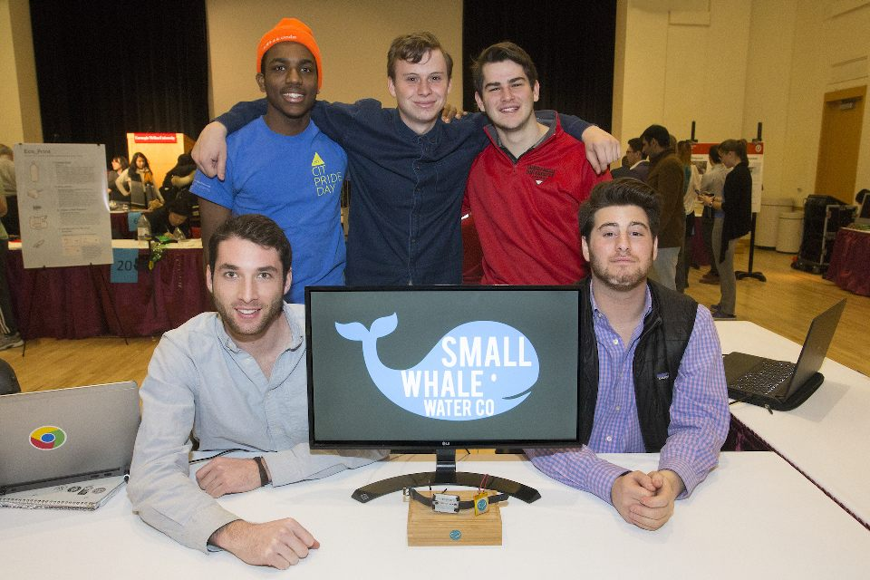
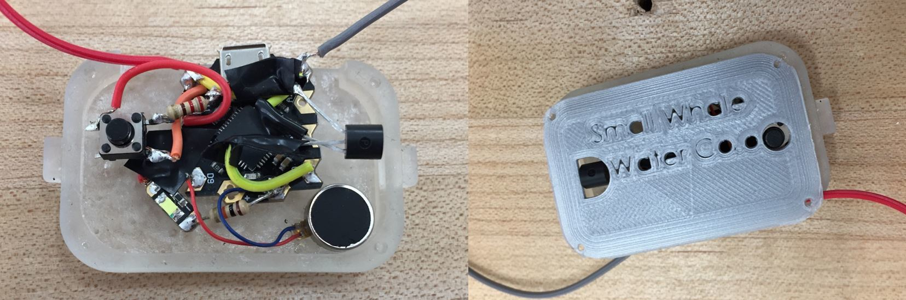
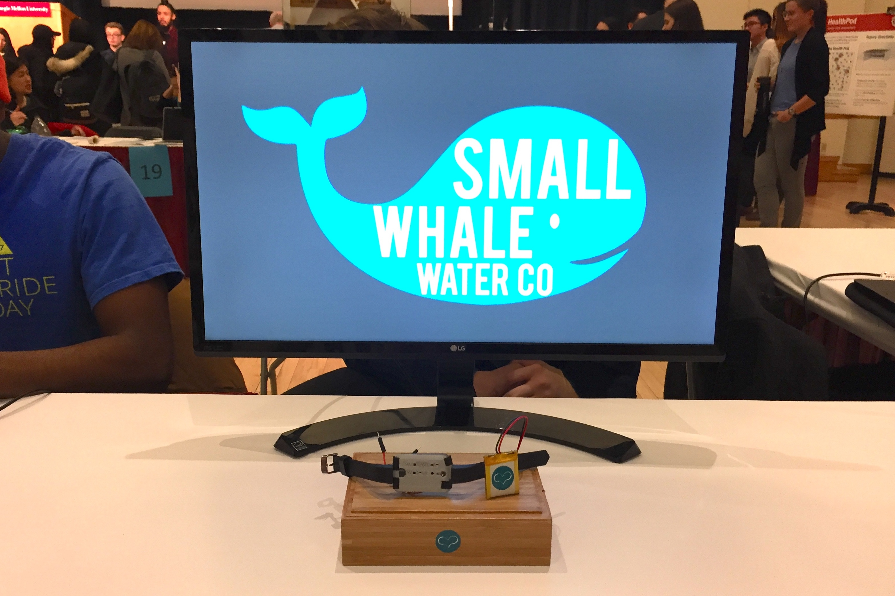

Carnegie Mellon's "Impact-a-Thon" is a yearly hack-a-thon focused on creating technology for social good. In light of the recent natural disasters around the world, the 2018 competition challenged students to utilize technology to augment or support global medical relief and response to natural disasters. Teams were given only one week and a $200 budget to design and present their product or service to the community!
With such a broad problem, our team sat down to conduct a mini design sprint, modelled off of the Google Design Sprint! The exercise yielded many avenues for exploration, allowing us to do technical deep-dives of candidate concepts after.
In our research, we found an incredible article from a doctor at the University of Florida's College of Medicine who, in his relief efforts in Haiti, was so invested in the work that he forgot to drink water and woke up with an IV due to severe dehydration. The problem turned out to be ubiquitous, and one which our team got behind very quickly. With some further brainstorming, we converged on designing a low cost, low profile wearable which could remind relief workers to drink water; aka, the Small Whale Water Company!

Our device had three main components; the software needed to relate temperature and the user's physiological parameters (weight, sex, etc.) to the frequency which one should drink a serving of water, the electronics used to get temperature readings and provide vibration feedback, and the enclosure to house it all.
While I was involved with all areas of the project, I took specific ownership of the mechanical design for the enclosure. Working with our mechatronics specialist, I designed a housing with enough space to properly isolate the microcontroller from the button and sensors, while preserving the intent of a sleek, low profile body. For convenience, I created extrusions to snap on to Fitbit wristbands. The entire enclosure was 3D printed from both resin and ABS.

With our functional prototype made, we presented to panels of professors and industry professionals! Our product was commended for being cheap and scalable, and we were able to recognize potential future opportunities to expand upon the technology!